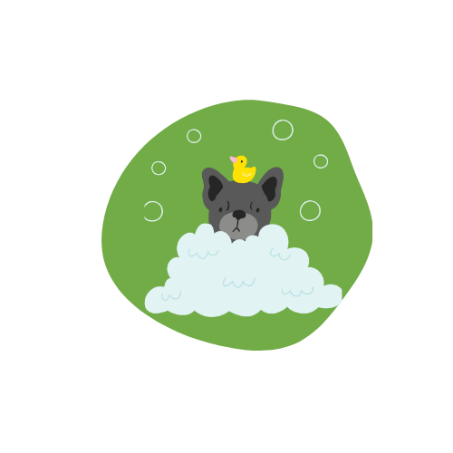
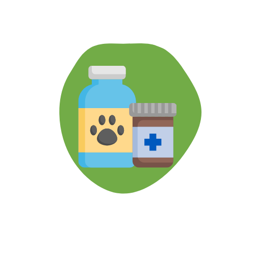
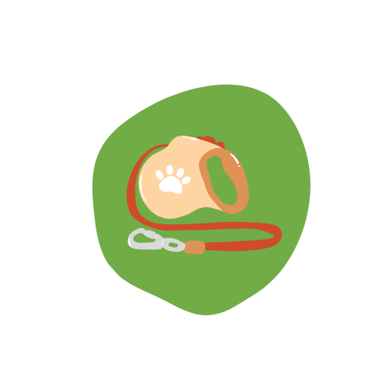
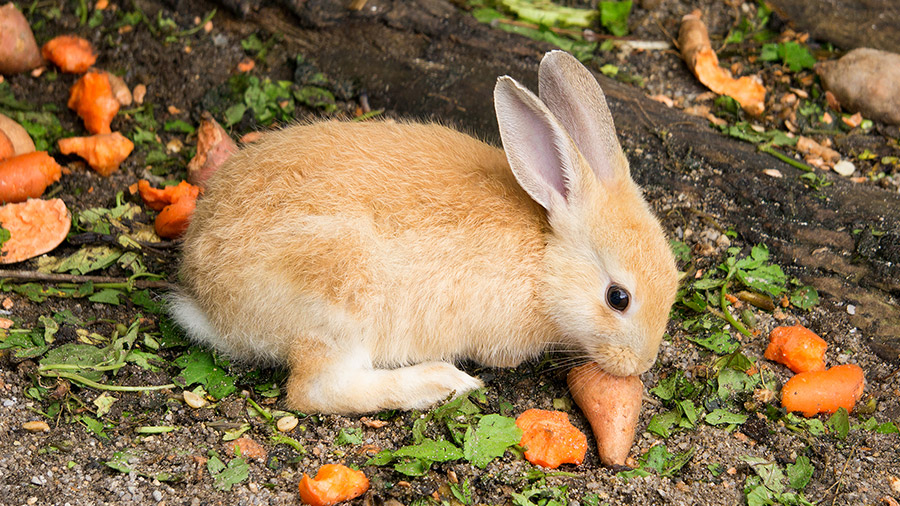
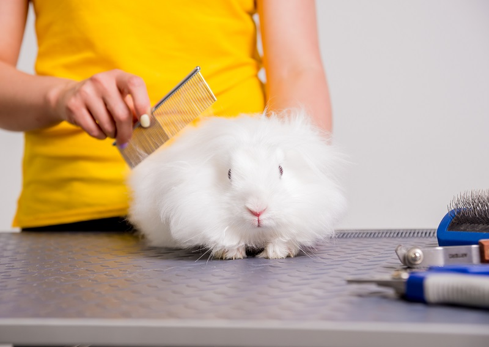
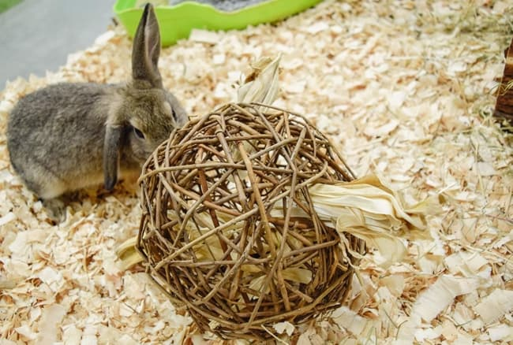

Bem-vindo ao Mundo dos Coelhos!
Descubra tudo sobre os adoráveis coelhos! Aqui, você encontrará informações sobre cuidados, alimentação, saúde e muito mais. Nosso objetivo é ajudar você a proporcionar um ambiente adequado para os seus coelhos e garantir que vivam felizes e saudáveis.
Cuidados essenciais com o seu pet
-  Banho e tosa
-  Serviços Veterinários
-  Adestramento
Guia de Cuidados Domésticos
Cuidar de um coelho envolve garantir que ele tenha espaço suficiente para se mover e que sua alimentação seja adequada. Este guia ajudará você a fornecer os cuidados essenciais para seu coelho, garantindo seu bem-estar e felicidade.
Nutrição
A alimentação dos coelhos é crucial para sua saúde. Ofereça feno de boa qualidade como base da dieta, juntamente com verduras frescas e uma quantidade limitada de pellets. Evite alimentos ricos em açúcar ou amido, como frutas e legumes ricos em carboidratos.
Higiene
Os coelhos são animais limpos, mas é importante manter sua área de convivência limpa. Troque a forração da gaiola com frequência e garanta que o coelho tenha sempre acesso a água limpa. Também é importante aparar as unhas do coelho regularmente.
Atividade
Os coelhos precisam de espaço para correr e explorar. Ofereça um ambiente seguro onde eles possam brincar e se exercitar. Além disso, brinquedos que estimulem sua curiosidade e atividades de roer são essenciais para manter o coelho ativo e saudável.